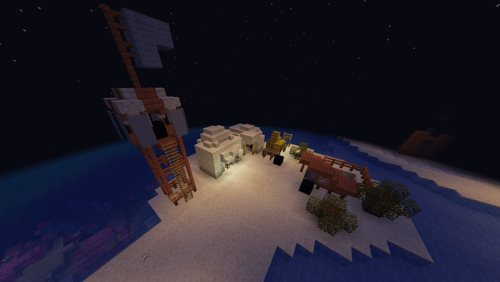

Контракты
Контракты — это задания, которые игрок берёт на станциях у НПЦ, выполняет в открытом мире и получает за них награды. Это основной способ встать на ноги и направить своё развитие.

Как это работает
- Найдите НПЦ контрактов на острове контрактов в городе и кликните ПКМ.
- Выберите тип контракта и сложность.
- Выберите одну из 3 предложенных наград — она будет выдана по завершении.
- Выполняйте задание; прогресс отслеживается автоматически (/contracts — список активных).
- Заберите награду на станции по завершении.
Одновременно можно держать до 5 активных контрактов.
Типы контрактов
| Тип | Задача |
|---|---|
| Сбор | Добыть и сдать нужное количество ресурса. |
| Исследование | Посетить биомы, найти структуру или отойти от спавна на расстояние. |
| Доставка | Довезти груз (вагонетку с сундуком) до указанной точки. Груз нельзя выбросить. |
| Комбо мобов | Убить заданную комбинацию мобов (например, 52 зомби и 12 пауков). |
| PvP | Убить N уникальных игроков. |
| Фракционные | Урон по вражеским ядрам, захват РТ, убийства врагов (только для участников фракций). |
| Охота на боссов | Убить конкретного мирового босса. |
Сложности и сроки
| Сложность | Множитель награды | Срок выполнения |
|---|---|---|
| Лёгкий | ×1.0 | 72 часа |
| Средний | ×1.5 | 72 часа |
| Сложный | ×2.0 | 72 часа |
У контрактов бывают доп. условия: только ночью, нельзя умирать, вдали от города, в Незере/Энде, в конкретном биоме и т.п. Просроченный контракт пропадает. Отмена даёт кулдаун.
Ранг контрактора
За каждый выполненный контракт начисляется опыт контрактора (XP). С ростом XP повышается ранг — открываются более сложные контракты и новые типы заданий. Прогресс — /contracts rank.
| Ранг | Нужно XP | Что открывает |
|---|---|---|
| Новичок | 0 | Лёгкие и средние контракты: Сбор, Исследование, Доставка, Комбо мобов. |
| Подмастерье | 100 | + Сложные контракты, типы PvP и Фракционные. |
| Контрактор | 300 | + Тип «Охота на боссов». |
| Мастер | 700 | Приоритет ценных контрактов и повышенные награды. |
| Легенда | 1500 | Высший ранг контрактора. |
Сколько XP даёт контракт
Опыт контрактора начисляется по сложности выполненного контракта: чем сложнее задание — тем больше XP. Ступени опыта растут от лёгких к сложным контрактам; конкретные значения настраиваются на сервере. Таким образом браться за сложные и рискованные контракты выгоднее не только по награде, но и по рангу.